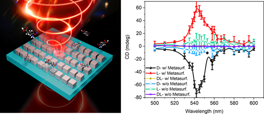
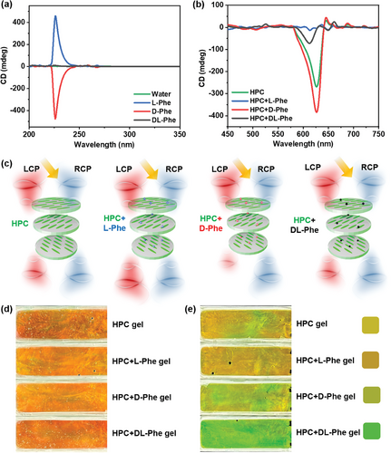
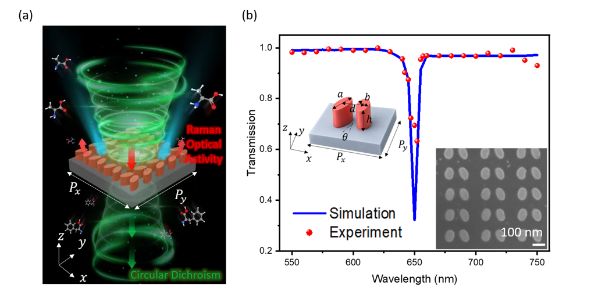
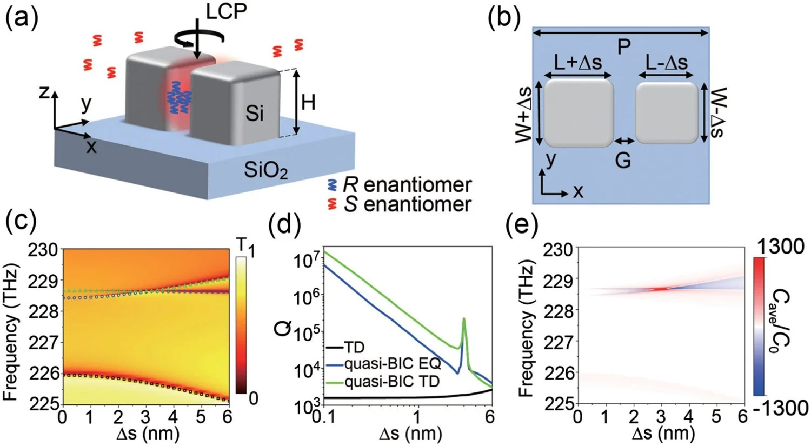

Research

Superchiral metasurfaces for CD sensing
Achiral silicon dimers amplify circular dichroism signals of molecules in liquid solution and provide experimentally accessible chiral hotspots.
Dielectric metasurfaces · 12× measured CD enhancement
Chiral sensing with photonic cellulose gels
Cholesteric hydroxypropyl cellulose gels provide a visible-light route for distinguishing L-, D-, and DL-amino acids through color and CD response.
Soft photonic materials · Visible-light chiral sensing
High-Q metasurfaces for CD & ROA
Quasi-BIC nanostructures support complementary circular dichroism and Raman optical activity measurements with strong chiroptical enhancement.
Quasi-BIC photonics · CD and ROA
Enantioselective optical forces
Strong local optical chirality in quasi-BIC structures produces different force landscapes for opposite enantiomers.
Chiral optical force · Theory and numerical modeling